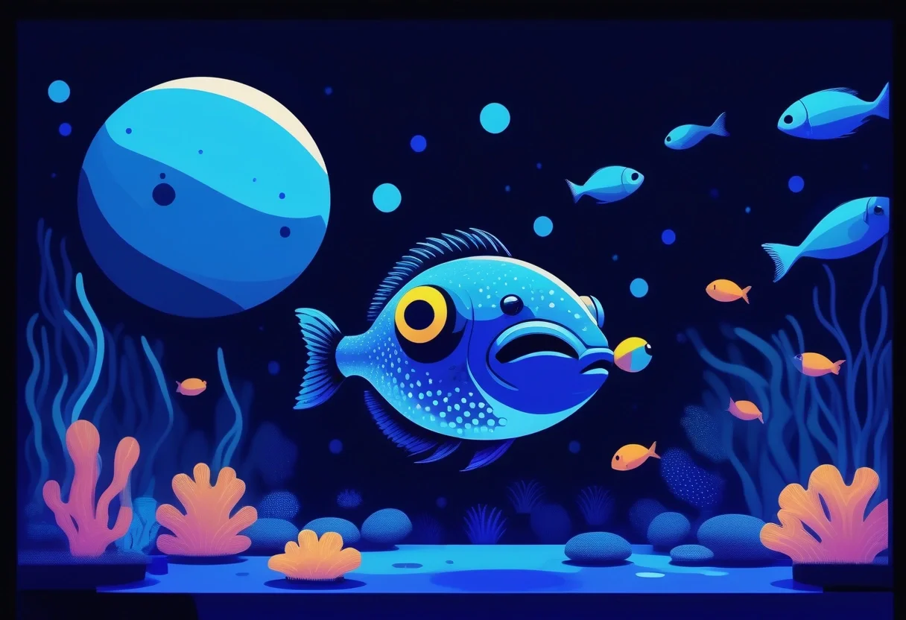

Warum Mondlicht im Aquarium mehr ist als Deko
Wer sein Aquarium nur tagsüber betrachtet, verpasst die spannendste Hälfte des Unterwasserlebens. Viele beliebte Aquarienfische sind nachtaktiv – sie verstecken sich am Tag und zeigen erst in der Dämmerung ihr faszinierendes natürliches Verhalten. Mit einer durchdachten Nachtbeleuchtung kannst du dieses Verhalten beobachten, ohne die Tiere in Stress zu versetzen.
Ein echtes Aquarium-Mondlicht ist weit mehr als ein optisches Gimmick. Es senkt nachweislich den Stresspegel vieler Fischarten, ahmt den natürlichen Tag-Nacht-Rhythmus nach und kann sogar das Brutverhalten bei einigen Arten auslösen, da viele Zierfische bei Vollmond oder zunehmendem Mond laichen. Die richtige Nachtbeleuchtung gehört deshalb in jedes artgerecht eingerichtete Aquarium – nicht nur in Diskus- oder Zuchtbecken.
Was ist „Mondlicht" eigentlich? Lichtspektrum und Farbtemperatur
Echtes Mondlicht ist physikalisch betrachtet reflektiertes Sonnenlicht – also im Grunde Tageslicht. In unseren Augen wirkt es aber bläulich, weil das menschliche Sehvermögen bei sehr niedrigen Helligkeiten (skotopisches Sehen) seine Empfindlichkeit in den blauen Bereich verschiebt. Für die Aquarienbeleuchtung bedeutet das: Eine LED mit niedriger Intensität und blauer Farbtemperatur simuliert diesen Effekt perfekt.
Zum Vergleich: Normales Tageslicht hat rund 6500 K Farbtemperatur – eine Mischung aus Rot, Orange, Gelb, Grün und Blau. Aquarium-Mondlicht bewegt sich bei 4500 bis 9000 K, also kühler und deutlich blaulastiger. Die Lichtmenge (Lumen) sollte dagegen nur 1–5 % der normalen Tagesbeleuchtung betragen, damit die Fische es als „Nacht" wahrnehmen.
- Tageslicht: 6500 K, 30–60 Lumen/Liter, volle Beleuchtungsdauer (8–10 Std.)
- Mondlicht: 4500–9000 K, 0,1–0,5 Lumen/Liter, 8–12 Std. in der Nacht
- Ideale Wellenlänge: 450–470 nm (tiefblau) – beruhigend, durchdringt Wasser gut
Welche Fische sind nachtaktiv und wie reagieren sie?
Nachtaktive Fische haben im Laufe der Evolution besondere Anpassungen entwickelt: vergrößerte Augen, empfindliche Seitenlinienorgane und oft einen ausgeprägten Bartel- oder Tastsinn. In der Natur verlassen sie tagsüber ihre Verstecke kaum. Im Aquarium kann man sie aber mit der richtigen Beleuchtung trotzdem sehen – vorausgesetzt, das Licht ist schwach genug, um nicht als Bedrohung wahrgenommen zu werden.
Typische nachtaktive Aquarienbewohner sind:
- Panzerwelse (Corydoras): Streifenpanzerwelse, Metallpanzerwelse und Co. werden in der Dämmerung aktiv und durchsuchen den Bodengrund nach Futterresten. Sie lieben Mondlicht und zeigen sich dann in ihrer ganzen Farbenpracht.
- Welse allgemein: Antennenwelse, Harnischwelse (L-Welse), Schilderwelse – fast alle Welsarten sind dämmerungs- und nachtaktiv. Unter Mondlicht kannst du ihre oft versteckte Zeichnung bewundern.
- Einige Salmler: Der Kirschflecksalmler, der Rotmaulsalmler oder der Schmetterlingssalmler sind ausgeprägte Dämmerungsfische.
- Schmerlen: Prachtschmerlen, Zebraschmerlen und Co. werden in der Dämmerung besonders aktiv und durchkämmen den Boden.
- Garnelen & Krebse: Auch Wirbellose profitieren vom Mondlicht – sie zeigen sich häufiger und verhalten sich natürlicher.
Reaktion der Fische: Bei korrekt eingestellter Mondlichtintensität kommen die Tiere aus ihren Verstecken, zeigen entspanntes Schwimmverhalten und suchen gezielt nach Futter. Bei zu hellem Nachtlicht bleiben sie versteckt oder flüchten panisch – das ist ein klares Zeichen für Fehleinstellung.
Mondphasen-Simulation: So funktioniert die Technik
Wer noch einen Schritt weiter gehen will, kann die Mondphasen simulieren. Im natürlichen Lebensraum vieler Fische beeinflusst der Mondstand die Fortpflanzung: viele Arten laichen bevorzugt bei Vollmond oder zunehmendem Mond, andere bei Neumond. Eine Mondphasen-Simulation ahmt den 29,5-tägigen Mondzyklus nach – von Neumond (0 %) über Halbmond (50 %) bis Vollmond (100 %).
Technisch wird das über einen dimbaren LED-Kanal realisiert, dessen Helligkeit sich täglich leicht ändert. Das geht mit:
- Speziellen Aquarium-Controllern (z. B. GHL Profilux, Hydros, Apex)
- Selbstgebauten Arduino- oder Raspberry-Pi-Lösungen
- App-gesteuerten LED-Leisten mit Mondphasen-Profil
Für die meisten Hobby-Aquarianer reicht eine einfache, dimmbare blaue LED mit Zeitschaltuhr völlig aus. Die Mondphasen-Simulation ist vor allem für Züchter interessant, die gezielt das Laichverhalten ihrer Tiere anregen möchten.
🛒 Aquarium Mondlicht LED kaufen
Wasserdichte LED-Leisten in Blau, dimmbar und mit Zeitschaltuhr – ideal als Nachrüstlösung für dein Aquarium.
👉 Mondlicht-LEDs bei Amazon ansehenLED-Mondlicht nachrüsten: 3 Wege im Überblick
Du hast ein bestehendes Aquarium ohne Mondlicht? Kein Problem – es gibt drei bewährte Wege, nachträglich eine stimmungsvolle Nachtbeleuchtung zu installieren.
1. Eigenständige blaue LED mit Netzteil
Die günstigste Lösung: Eine einzelne wasserdichte LED oder ein kleiner LED-Streifen, angeschlossen an ein 12V-Netzteil mit Zeitschaltuhr. Ideal für Einsteiger, lässt sich in unter einer Stunde installieren und kostet 15–30 Euro.
2. Zweite LED-Leiste (Tageslicht + Mondlicht getrennt)
Wer bereits eine Tageslicht-LED hat, kann eine zweite, separate blaue LED-Leiste installieren. Vorteil: Tageslicht und Mondlicht sind unabhängig steuerbar, kein Kompromiss bei der Hauptbeleuchtung. Achte darauf, dass beide Leisten jeweils einen eigenen Timer bekommen.
3. RGB-Controller & smarte LED-Streifen
Die eleganteste, aber auch teuerste Lösung: Ein RGB-Controller mit App-Steuerung, an dem du separate Kanäle für Tageslicht, Abenddämmerung und Mondlicht programmieren kannst. Sonnenauf- und -untergang lassen sich in Minuten simulieren, inklusive realistischer Farbverläufe.
Bauanleitung: Einfache Mondlicht-LED mit Zeitschaltuhr (12V)
Diese Schritt-für-Schritt-Anleitung zeigt dir, wie du in 30 Minuten ein sicheres, zuverlässiges Aquarium-Mondlicht selbst baust. Du brauchst kein Lötkolben-Genie zu sein – Stecksysteme reichen völlig.
Material (ca. 25–40 Euro)
- 1× wasserdichter LED-Streifen 12V, kaltweiß-blau (z. B. 30–60 cm, IP65/IP67)
- 1× 12V-Netzteil (Trafo) mit ausreichender Leistung (mind. 20 % Reserve)
- 1× Zeitschaltuhr (mechanisch oder digital, 230V)
- 1× Kabel mit DC-Hohlstecker (passend zum Netzteil)
- Optional: Alu-Profil zur Kühlung und als Montageschiene
Schritt 1 – Position planen
Platziere den LED-Streifen an der Vorder- oder Rückseite des Beckens, knapp unter der Wasseroberfläche oder direkt unter dem Beckenrand. Das Licht sollte ins Wasser strahlen, nicht nach oben oder direkt in deine Augen.
Schritt 2 – LED-Streifen befestigen
Wasserdichte Streifen haben eine selbstklebende Rückseite. Reinige die Klebestelle mit Glasreiniger, trockne sie gut ab und drücke den Streifen fest an. Optional zusätzlich mit Silikonkleber fixieren.
Schritt 3 – Netzteil anschließen
Verbinde den LED-Streifen über den DC-Hohlstecker mit dem 12V-Netzteil. Achtung: Niemals das Netzteil oder Steckverbindungen in Wassernähe betreiben. Trafo und Zeitschaltuhr müssen trocken sitzen – idealerweise in einem Schrank oder an der Wand hinter dem Aquarium.
Schritt 4 – Zeitschaltuhr einstellen
Stelle die Zeitschaltuhr so ein, dass das Mondlicht 30 Minuten vor dem Ausschalten der Tageslicht-LED angeht und erst kurz vor dem Einschalten des Tageslichts wieder ausgeht. So entsteht ein sanfter Übergang, der den natürlichen Sonnenauf- und -untergang imitiert.
Schritt 5 – Testlauf
Beobachte deine Fische beim ersten Lauf genau. Zeigen sie sich entspannt und werden aktiv, ist die Intensität richtig. Verstecken sie sich oder flüchten, brauchst du entweder weniger LEDs (Streifen kürzen) oder einen Dimmer.
Sicherheit geht vor: Arbeite mit 12V-Gleichstrom – das ist auch bei Wasserkontakt ungefährlich. Verwende ausschließlich Komponenten mit passender IP-Schutzklasse und halte alle Steckverbindungen trocken.
Fertige Mondlicht-Module: Vor- und Nachteile
Nicht jeder möchte selbst zur LED greifen – und das ist auch nicht nötig. Es gibt mittlerweile eine große Auswahl an fertigen Mondlicht-Modulen, die speziell für Aquarien entwickelt wurden.
Vorteile
- Plug-and-play: auspacken, anschließen, fertig
- Optimierte Wellenlänge für Süß- und Meerwasser
- Mit Timer, Dimmer oder App-Steuerung
- IP-zertifiziert und aquariumgeprüft
Nachteile
- Höherer Preis (40–250 Euro je nach Ausstattung)
- Oft proprietäre Stecksysteme – nicht kompatibel mit anderer Technik
- Bei minderwertigen Produkten schlechte Farbwiedergabe
Was kostet gute Qualität? Für ein solides Mondlicht-Modul mit Timer und Dimmer solltest du 50–80 Euro einplanen. Smarte RGB-Controller mit App und Mondphasen-Simulation beginnen bei rund 100 Euro und können bis 250 Euro kosten. Billigprodukte unter 20 Euro haben oft keine ausreichende IP-Schutzklasse und kein passendes Netzteil – davon ist abzuraten.
🛒 Wasserdichte LED-Streifen & Zubehör
Wasserdichte 12V LED-Streifen, RGB-Controller und Netzteile – die wichtigsten Bauteile für dein eigenes Mondlicht-Projekt.
👉 LED-Streifen bei Amazon entdeckenBeobachtungs-Tipps: Wann sind welche Fische aktiv?
Mit dem Mondlicht eröffnet sich dir ein zweites Leben im Aquarium. Hier ein kleiner Beobachtungs-Leitfaden:
- Direkt nach Ausschalten des Tageslichts: Panzerwelse werden aktiv, durchsuchen den Boden.
- 30–60 Minuten nach Mondlicht-Start: Antennenwelse verlassen ihre Höhlen, Welse patrouillieren durch das Becken.
- Mitten in der Nacht (2–4 Uhr nachts): Die meisten nachtaktiven Arten sind auf Futtersuche – perfekt für eine kleine Fütterung mit sinkendem Futter.
- Eine Stunde vor Tageslicht: Viele Tagfische werden langsam munter, Salmler zeigen Balzverhalten.
- Bei Vollmond (heller eingestelltes Mondlicht): Erhöhte Aktivität bei allen Arten, oft vermehrtes Balz- und Laichverhalten.
Mit der Zeit lernst du den Rhythmus deiner Fische kennen und kannst gezielt Fütterungszeiten, Beobachtungsmomente und Fotogelegenheiten planen.
🛒 RGB-Controller fürs Aquarium
App-gesteuerte RGB-Controller ermöglichen eigene Sonnenauf- und -untergänge sowie sanfte Mondphasen-Simulation.
👉 RGB-Controller bei Amazon ansehenSicherheit: 12V-Technik, IP-Schutz und Trafo richtig einsetzen
Strom und Wasser vertragen sich nicht – diese Binsenweisheit gilt auch im Aquarium. Mit der richtigen Spannung und Schutzklasse ist eine Mondlicht-Installation aber absolut sicher.
- Spannung: Verwende ausschließlich 12V- oder 24V-Gleichstrom. Selbst bei Kontakt mit Wasser besteht keine Lebensgefahr.
- IP-Schutzklasse: Alles, was direkt im oder am Aquarium verbaut wird, braucht mindestens IP65 (staubdicht, Schutz gegen Strahlwasser). Idealerweise IP67 (zeitweiliges Untertauchen).
- Netzteil/Trafo: Verwende ein Marken-Netzteil mit CE-Zeichen und Überlastschutz. Billig-Netzteile von No-Name-Herstellern können Brände verursachen.
- Steckverbindungen: Alle Verbindungen müssen trocken bleiben. Kabelkanäle, Gießharz-Verbindungen oder IP67-Stecker sind Pflicht.
- Absicherung: Eine Fehlerstrom-Schutzeinrichtung (FI/RCD) in der Steckdose ist empfehlenswert – die meisten Aquarien-Stromkreise sollten sowieso über einen FI abgesichert sein.
Wenn du dir unsicher bist, lass die Elektrik von einer Elektrofachkraft prüfen oder greife zu einem geprüften Komplett-Set vom Hersteller.
Fazit: Mehr sehen, weniger stören
Eine durchdachte Aquarium-Nachtbeleuchtung ist das fehlende Puzzleteil für ein wirklich naturnahes Aquarium. Du siehst Verhalten, das tagsüber unsichtbar bleibt, deine Fische fühlen sich wohler, und du kannst mit etwas Geschick sogar Mondphasen simulieren. Die Investition ist überschaubar – schon für 25–40 Euro bekommst du eine zuverlässige Mondlicht-Lösung, die dein Aquarium buchstäblich in neuem Licht erscheinen lässt.
Unsere Empfehlung: Starte mit einer einfachen, wasserdichten 12V-LED-Leiste in Blau, einer Zeitschaltuhr und einem passenden Marken-Netzteil. Achte auf korrekte IP-Schutzklasse und dimme das Licht anfangs lieber etwas schwächer. Beobachte deine Fische genau – sie zeigen dir, ob die Intensität stimmt. Mit der Zeit kannst du immer feiner justieren und das Lichtprofil deines Aquariums perfektionieren.
Du hast weitere Fragen zu LED-Beleuchtung, Sicherheit oder dem richtigen Farbspektrum? Schreib uns eine Nachricht – wir helfen gerne weiter!